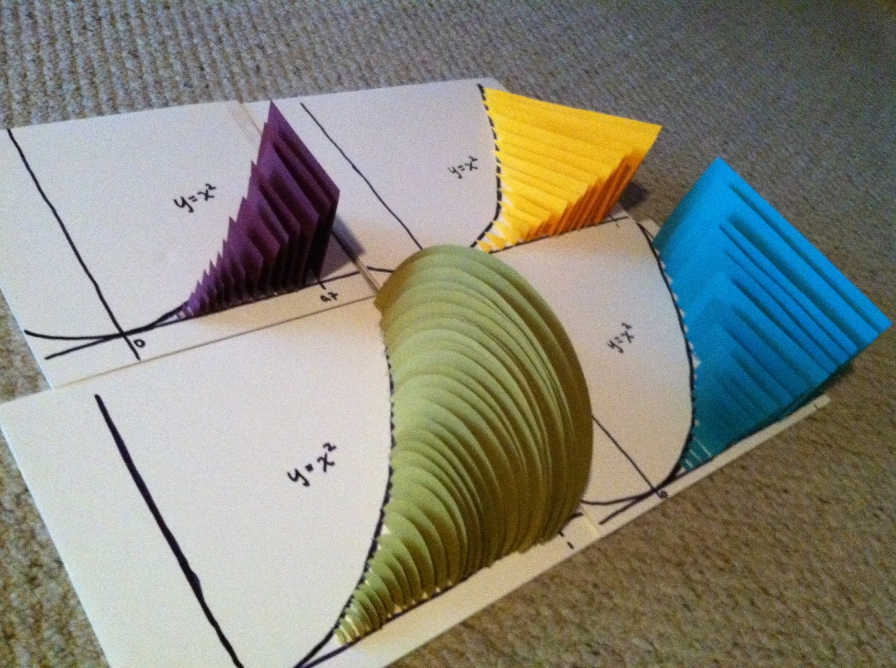

With the basis of finding area by integration, the next step is to find volume.
The first type of problem we will look at are solids formed by what we call "known cross-sections."
In the figure above, you can see two cross-sections that are squares, that are coming out of this base. The base is in the xy-plane, and the cross-sections are projecting up. Imagine an infinite number of squares covering the entire base; that is the solid we will be finding the volume of.
This can often be difficult to visualize, but you'll find that finding the volume is very straightforward.
What makes these solids harder to visualize is that their shape depends on the shape of the corss-section—not on the shape of the base.
In the figure above, you can see that the base is \(y=x^2\) for all the models, but the shape of the cross-sections produce a different solid with a different volume.
So how are we going to find a way to calculate these volumes when they are all different? Easy—we go back to the beginning.
Recall that the underlying principle for finding the area of a plane region is to divide the region into thin strips, approximate the area of each strip with the area of a rectangle, add the approximations to form a Riemann sum, and then take the limit of the Riemann sum to produce an integral for the area.
Under appropriate conditions, the same strategy can be used to find the volume of a solid.
The idea is to divide the solid into thin slabs, approximate the volume of each slab, add the approximations to form a Riemann sum, and take the limit of the Riemann sum to produce an integral for the volume.
What makes this method work is the fact that a thin slab as a cross-section does not vary much in size or shape.
Moreover, the thinner the slab, the less variation in its cross-sections and the better approximation.
Thus, once we approximate the volumes of the slabs, we can set up a Riemann sum whose limit is the volume of the entire solid.
So the problem has slightly changed. Instead of looking for the volume of the entire solid, all we need to do is find the volume of each slab.
It turns out that finding the volume of one of the slabs isn't too hard as long as we can find the area of the cross-section.
If we can find that area, then the volume of the slab is simply that area times the "height."
$$dV=Ah=[\text{area of a cross section}][\text{height}]$$
So, we've changed the problem again; now, all we need to do is find the area of the cross-section. Once we have that, we have a way of writing the volume of the slab.
Our cross-sections will be perpendicular to either the \(x\)-axis or the \(y\)-axis—always.
The good thing is that the area of the cross-sections will be shapes that we know area formulas for: squares, triangles, rectangles, circles, semicricles, etc.
The hardest part will be synthesizing those formulas with the function used to describe the region.
Of course, we are familiar with finding the areas of shapes, but usually we know a side length. However, now, our base is defined by the function.
Let's say that the side length of the square is \(x^2-x\). Then the area can be written as a function of \(x\): \(A(x)=(x^2-x)^2\).
Likewise, if the base of the triangle was \(\sin(x)+3x\), then the area can be written as \(A(x)=\frac{1}{2}(\sin(x)+3x)^2\).
If the diameter of the circle is \(\ln(x)\), then \(A(x)=\frac{1}{4}\pi[\ln(x)]^2\)
Here's the process we're going to follow to find volume by known cross-section:
A calculator will be used frequently to perform integration.
Find the volume of the solid whose base is bounded by \(y=x+1\) and \(y=x^2-1\) and which is formed by square cross-sections that are perpendicular to the \(x\)-axis.
Note: Because the cross-sections are perpendicular to the \(x\)-axis, the rectangles will be drawn perpendicular to the \(x\)-axis.
$$\begin{align}A &= s^2 \\ A(x) &= [x+1-(x^2-1)]^2 \\ &= [x+1-x^2+1]^2 \\ A(x) &= [-x^2+x+2]^2\end{align}$$
$$\begin{align}x+1 &= x^2-1 \\ x^2-x-2 &= 0 \\ (x-2)(x+1) &= 0 \\ x &=2\text{, }x=-1\end{align}$$
$$V=\text{Base area}\cdot\text{height}$$
$$dV=(-x^2+x+2)^2dx$$
$$\begin{align}V &= \int_{-1}^2(-x^2+x+2)^2dx \\ &= 8.1\end{align}$$
Find the volume of the solid whose base is bounded by \(\sqrt{x}\) and \(y=x^2\) and which is formed by cross-sections that are equilateral triangles perpendicular to the \(y\)-axis.
Note: Because the cross-sections are perpendicular to the \(y\)-axis, the rectangles will be drawn perpendicular to the \(y\)-axis.
$$\begin{align}A &= \frac{1}{2}bh \\ &=\frac{1}{2}(\sqrt{y}-y^2)\frac{\sqrt{3}}{2}(\sqrt{y}-y^3) \\ &= \frac{\sqrt{3}}{4}(\sqrt{y}-y^2)^2\end{align}$$
\begin{align}y^2 &= \sqrt{y} \\ y^4 &= y \\ y^4-y &= 0 \\ y(y^3-1) &= 0 \\ y &= 0\text{, }y=1\end{align}
$$V=\text{Base area}\cdot\text{height}$$
$$dV=\frac{\sqrt{3}}{4}(\sqrt{y}-y^3)^2dy$$
$$\begin{align}V &= \int_0^1\frac{\sqrt{3}}{4}(\sqrt{y}-y^2)^2dy \\ &= 0.056\end{align}$$